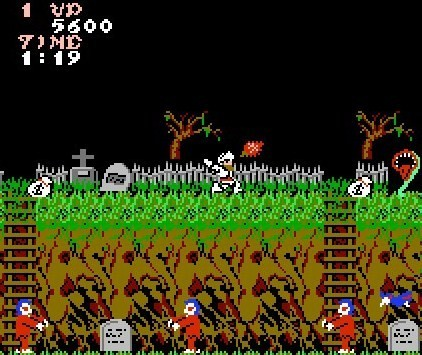

Ghosts'N Goblins, 1985
The game was produced by Capcom in 1985 and originally released on an arcade machine.
The game has you controlling a knight who throws his currently picked up-weapon axe,
lance, cross, dagger, or firebrand to kill enemies zombies, bats, demons and ghosts.
Two hits from an enemy attack will kill him. The first destroys his armour and then
he runs around in underpants. There are in total 6 levels and 7th being the final boss.
